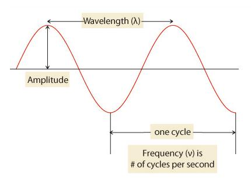
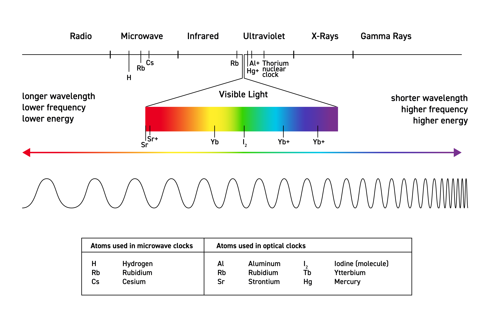
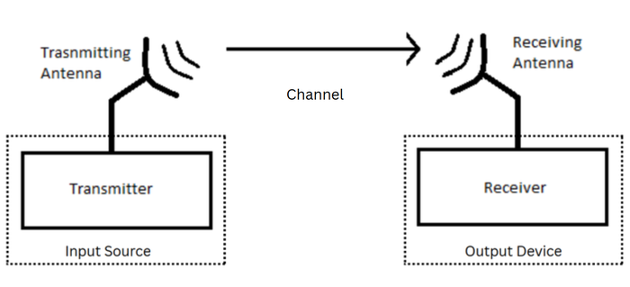
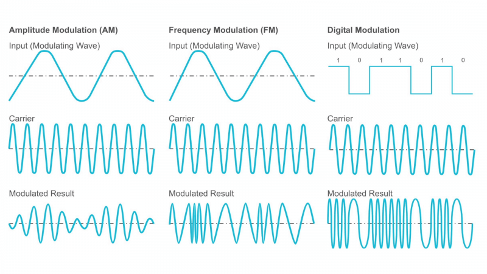
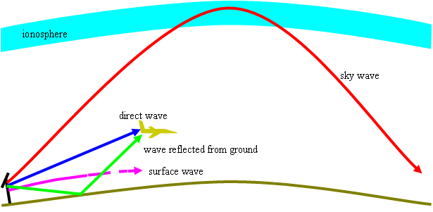
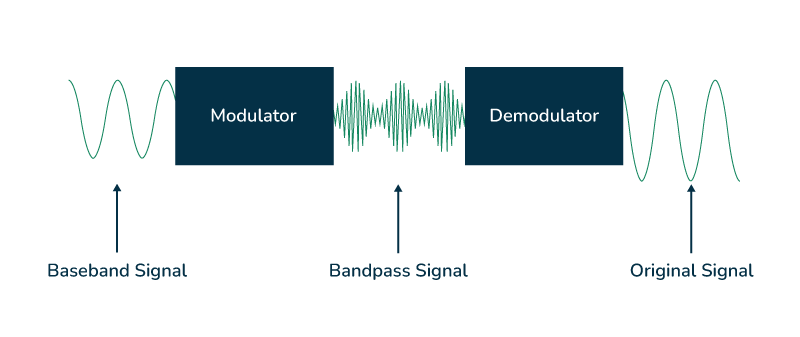

This article provides an overview of the radio communication process. The scope of the article covers the history of radio communication, the fundamentals of radio waves, and the radio communication process. The intended audience includes science enthusiasts and readers seeking a foundational understanding of radio communication.
1. Introduction
Have you ever wondered how information travels from one place to another without wires? Every day, we use technologies that rely on invisible signals moving through the air. Whether it’s listening to the radio, watching television, using Wi-Fi, or making a phone call, these activities are made possible by radio waves. Although we cannot see them, radio waves are constantly around us, carrying information and connecting people across the world.
A radio wave is an invisible ripple of energy that travels through the air to carry information. Think of it like dropping a stone into a pond. The splash creates ripples in the water that move outward. Instead of water, a radio wave is a ripple of energy moving through the air.
Radio wave is a type of wave radiation in the electromagnetic spectrum, which consists of a variety of other waves. The wireless telecommunication by means of radio waves is called radio communication. The electromagnetic spectrum is a continuum i.e. a continuous sequence of all electromagnetic waves such as infrared, X-rays, gamma rays, and radio waves, etc.
Radio waves consists of oscillating electric and magnetic fields that propagate through space at the speed of light. With long wavelengths and low frequencies, they are particularly suitable for wireless communication systems, including broadcasting, satellite communication, and radar.
2. History of Radio Communication
The history of radio communication is a remarkable journey of scientific discovery and technological innovation that transformed the way people communicate across distances.
-
In 1866, an American dentist, Mahlon Loomis, claimed to demonstrate wireless telegraphy, a method of sending messages without wires.
-
In 1864, James Clerk Maxwell, a Scottish physicist, predicted the existence of electromagnetic waves through mathematical theory.
-
Between 1887 and 1888, a German physicist, Heinrich Hertz, experimentally generated and detected these waves, confirming Maxwell’s predictions.
-
In the early 1890s, a Serbian-American inventor, Nikola Tesla, developed important ideas and devices related to wireless communication and radio transmission.
-
In 1895, Guglielmo Marconi, an Italian inventor, successfully demonstrated practical wireless telegraphy and proved the feasibility of long-distance radio communication. Tesla and Marconi were involved in a long-running patent dispute over key inventions related to radio technology.
-
In 1895, an Indian scientist, Jagadish Chandra Bose, demonstrated the transmission and detection of radio waves and developed sensitive radio-wave detectors. However, he did not actively pursue patents or commercial applications of his work.
-
In 1906, a Canadian inventor, Reginald Fessenden, conducted one of the first radio broadcasts of voice, music, and entertainment, marking a major milestone in radio communication.
The development of radio communication was a gradual process involving the contributions of numerous scientists and inventors. As a result, the invention of radio remains a subject of historical debate, making it difficult to credit any single individual as its sole inventor. Unlike other inventions, the technology of radio communication is a result of a very long evolution over a period of many years.
Although electromagnetic waves were predicted and experimentally demonstrated in the second half of the nineteenth century, their practical applications did not emerge until the late 1890s and early 1900s. The first radio broadcasts were carried out in the early twentieth century, and radio waves were quickly recognized as an efficient means of transmitting information over long distances. Initially used for wireless telegraphy, news broadcasts, and entertainment, the radio technology later evolved into two-way communication systems, wireless telephones, and eventually modern mobile communication networks.
3. Radio Wave and Electromagnetic Spectrum
3.1. What Actually is a Radio Wave?
Radio wave is actually a sine wave of specific frequency. A sine wave is a curve pattern that repeats itself after a fixed time interval. It is important to know about amplitude, frequency and wavelength when it comes to a radio wave. Amplitude, frequency, and wavelength of a sine wave is shown in figure 1.
-
Amplitude is a measure of the intensity, loudness, power, strength, or volume level of a wave.
-
Frequency is basically a number of waves or cycles that pass through a given point every second. It is measured in Hertz (Hz).
-
Wavelength is an actual distance that you can measure between two of the highest points in a wave. It is the distance between two successive corresponding points on a wave, such as from one crest to the next.

3.2. The Electromagnetic Spectrum
The Sun, Earth, and other celestial bodies radiate electromagnetic energy in the form of waves of different wavelengths. Sunlight is a form of electromagnetic (EM) radiation. The electromagnetic spectrum is a continuous range of all electromagnetic waves, including radio waves, infrared, visible light, ultraviolet, X-rays, and gamma rays.
As shown in figure 2, the spectrum is organized based on two key properties: wavelength and frequency. At one end of the spectrum having low frequency and long wavelength are radio waves. These carry low energies. At the other end having very high frequency and short wavelength are gamma rays. Higher-frequency waves, such as gamma rays, carry more energy than lower-frequency waves, such as radio waves. All electromagnetic waves travel through a vacuum at the speed of light. They differ in the amount of energy they carry, which increases with frequency.

3.3. Frequency Distribution of Radio Waves
Radio waves are the signals that travel through the air. A radio band is the frequency range those signals can use. A radio band is a small range of frequencies in the radio spectrum that is set aside for a specific use. To avoid signals interfering with each other, different services like radio broadcasting, mobile communication, and navigation are assigned with separate frequency ranges. In simple terms, A radio band is just a reserved range of frequencies used for one kind of communication.
Radio waves share specific bands of different frequencies. Their frequency range is from 30 Hertz to 300 Gigahertz (GHz). This range is also called as Radio Frequency (RF) range. At 30 Hz, the wavelength is approximately 10,000 kilometers (km). At 300 GHz, the corresponding wavelength of a radio wave is approximately 1 millimeter (mm). The distribution of Radio Frequencies is as given in table below.
| Band Name | Abbreviation | Frequency | Wavelength |
|---|---|---|---|
Super Low Frequency |
SLF |
30–300 Hz |
10,000–1,000 km |
Ultra Low Frequency |
ULF |
300–3,000 Hz |
1,000–100 km |
Very Low Frequency |
VLF |
3–30 kHz |
100–10 km |
Low Frequency |
LF |
30–300 kHz |
10–1 km |
Medium Frequency |
MF |
300–3,000 kHz |
1 km–100 m |
High Frequency |
HF |
3–30 MHz |
100–10 m |
Very High Frequency |
VHF |
30–300 MHz |
10–1 m |
Ultra High Frequency |
UHF |
300–3,000 MHz |
1–0.1 m |
Super High Frequency |
SHF |
3–30 GHz |
100–10 mm |
Extremely High Frequency |
EHF |
30–300 GHz |
10–1 mm |
Radio waves have frequencies as high as 300 gigahertz and as low as 30 hertz. Radio waves have both the longest wavelengths and the lowest frequencies.
Microwaves are a subset of radio waves with extremely high frequencies. They are electromagnetic waves that span a broad frequency range from 300 MHz to 300 GHz, corresponding to wavelengths between 1 meter and 1 millimeter. Their exact frequency depends on the specific application; for example, consumer microwave ovens typically operate at 2.45 GHz.
All microwaves are radio waves, but not all radio waves are microwaves.
4. Block Diagram of Radio Communication
Have you ever wondered how radio waves are actually sent and received? That’s possible with antennas! An antenna is a device that enables wireless communication by converting energy between electrical signals and radio waves. On transmission, it transforms alternating electric signals into radio waves that propagate through space. On reception, it performs the reverse process—capturing incoming radio waves and converting them back into electrical signals that can be processed by a device. This simple conversion is what makes long-distance wireless communication possible, from radio broadcasting to mobile networks.

The function of each part from the block diagram of radio communication is as explained below.
-
Input Source: This is where the message starts (voice, music, or data).
-
Transmitter: Converts the input signal into a form suitable for sending. It encodes and modulates the signal onto a high-frequency carrier wave.
-
Transmitting Antenna: Sends the modulated signal into space as radio waves.
-
Channel (Free Space): It is the medium through which radio waves travel (air or vacuum). Noise and interference may affect the signal here.
-
Receiving Antenna: Captures the radio waves from the air.
-
Receiver: Extracts the original message from the received signal. It demodulates and decodes the signal.
-
Output Device: Converts the signal back into usable form (sound in a speaker, data on a screen).
5. Process of Radio Communication
Radio communication is the wireless transmission of information using electromagnetic waves. It typically involves three main stages:
-
Modulation
-
Propagation
-
Demodulation
5.1. Modulation
Every radio, whether it is a traditional radio box or a radio found in your smartphone, all uses a same basic method of transmitting information and the method is modulating the wave before transmitting it. A sine wave (also referred as carrier signal or carrier wave) alone does not contain any of the data that we need. This is why, we need to take this sine wave and modulate it. To include speech information or data information, another wave is used for imposing onto carrier signal. That information signal is called as input signal (modulating wave). This process of imposing an input signal onto a carrier wave is called as modulation.
Modulation is carried out to increase strength of wave so that the information in the carrier will not be affected by atmosphere. The three basic methods of modulation are amplitude modulation (AM), frequency modulation (FM), and pulse modulation. It is as shown in figure 4.

-
Amplitude Modulation (AM): In Amplitude Modulation, the amplitude (strength) of a high-frequency carrier wave is varied in proportion to the message (audio or data) signal, while the frequency and phase stay constant. This method is used in AM radio stations and old analog TV signals.
-
Frequency Modulation (FM): Frequency modulation changes a sine wave by varying its frequency while keeping amplitude constant. A change in frequency is actually caused by a change in phase over time. This method is used by FM radio stations. Phase modulation is similar to FM. But, the only difference is, the phase of the wave is varied in phase modulation. Phase refers to the position of a point in time (instant) on a wave.
-
Pulse Modulation: Pulse modulation is a technique in which the signal is transmitted with the information by pulses. A pulse is binary signal i.e. a wave having only zero (0) and one (1) values. Pulse modulation is divided into analog pulse modulation and digital pulse modulation scheme. An analog pulse modulation scheme has an input wave that varies continuously like a sine wave. In digital pulse modulation scheme, the voice is sampled at some rate. Sampling is the process of measuring instant values of a continuous wave in a discrete form. The discrete form is the representation of wave in certain time instants. The wave is compressed after sampling process and turned into a pulse. The pulse is then imposed on the carrier. Digital pulse modulation is also called as digital modulation (DM).
5.2. Propagation
Once the information signal is modulated, it is ready to travel in atmosphere. The behavior of radio waves as they travel, from one point to another, or into various parts of the atmosphere is called as radio wave propagation. There are three modes of radio-wave propagation: space wave propagation, surface wave propagation, and sky wave propagation. It is as shown in figure 5.

-
Space wave propagation: In this mode, radio waves travel in free space, or away from other objects which affect the way in which they travel. This method was commonly used in old-fashioned telephone networks.
-
Surface wave propagation: In surface wave propagation, radio waves are modified by ground or terrain over which they travel.
-
Sky wave propagation: Here, the radio waves are modified by a region high up in the earth’s atmosphere known as the ionosphere. With this method of travel, the radio waves hit the ionosphere, bounce back down to earth, and bounce back up again.
5.3. Demodulation
Demodulation is a process of separating original information from a modulated wave. It’s a reverse process of modulation. A demodulator converts changes in amplitude, frequency, or phase back into the original information signal as shown in figure 6. A baseband signal is the original information you want to send. A bandpass signal is the baseband signal that has been placed onto a high-frequency carrier wave so it can travel efficiently through a communication channel.

Why demodulation is necessary? It’s because it separates the audio or message signal from the high-frequency carrier, making it possible to hear or use the original transmitted information. Without demodulation, the transmitted data would remain hidden in the carrier wave and cannot be understood or played back. There are 3 types of demodulation:
-
AM demodulation: Extracts the original message by detecting variations in the amplitude of the received carrier wave.
-
FM demodulation: Recovers the original message by detecting variations in the frequency of the received carrier wave.
-
Digital demodulation: Recovers digital data by interpreting changes in the received signal’s amplitude, frequency, phase, or a combination of these.
The choice of demodulation technique depends on the type of modulation. For example, If transmitted radio wave is amplitude modulated, then AM demodulation technique is used at the receiver. Receiver system is made in such a way that it separates the essential information within the radio wave to extract the data we want, like music, a human voice, etc.
6. Conclusion
It is concluded that the radio waves are modulated by various techniques and transmitted at RF range with the help of transmitting antenna. Propagation of radio waves occurs in three modes as they travel in the atmosphere. Receiving antenna helps to capture a radio wave of particular frequency and finally, the demodulation is carried out at receiver. So, the original information signal sent by transmitter is retrieved at the receiver. In this way, radio communication takes place and information is transmitted from one place to another.
7. References
-
Wikipedia, "Radio Wave", https://en.wikipedia.org/wiki/Radio_wave
-
Wikipedia, "Distribution of Radio Frequencies", https://en.wikipedia.org/wiki/Radio_spectrum
-
Livescience, "What are radio waves", https://www.livescience.com/50399-radio-waves.html
-
US National Institute of Standard and Technology, "Electromagnetic spectrum graphic", https://www.nist.gov/image/electromagnetic-spectrum-graphic
-
Australian Space Weather Forecasting Centre, "Introduction to HF Radio Propagation", https://www.sws.bom.gov.au/Educational/5/2/2
-
geeksforgeeks, "What is Demodulation?", https://www.geeksforgeeks.org/electronics-engineering/what-is-demodulation/